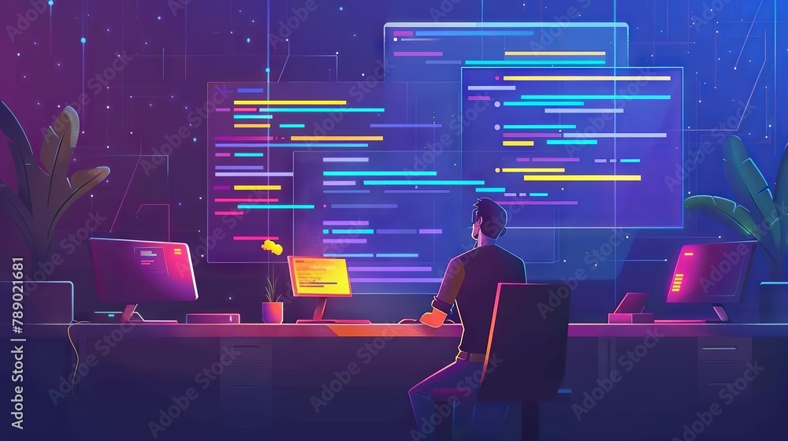

That depends on you. Creating something does not have to be the end of your journey, and you can always expand upon the skills you’ve learned to apply them in a more technical or professional field of work. With the basics of Programming, Sound Design, and Digital Art you can go a long way. Although some skills overlap with certain job positions we will be focusing on becoming a professional at one.
If you like working with computers and consider pursuing a career with them, you might be interested in this array of jobs and industries that hire individuals with programming expertise.

If you are interested in manipulating audio and breathing life into media with sound, you might be interested in this array of jobs and industries that hire individuals with sound design expertise.
If you are interested in Drawing, Animation, or Modeling you should look into becoming a Digital artist. Digital artist use computers, tablets, and software to create art.
One area of expertise you can put your main focus on is becoming a Front-end developer. Front-end developers create and maintain the elements on a website or web application that users interact with, such as videos or clickable buttons. Front-end developers help ensure that end users have a seamless experience and can easily navigate to the website or web application's various features.
If you’re still interested in developing, then another field you could go into is Software development. Software developers design and create programs and applications for a variety of computer systems which also includes apps on your mobile phone. A great example of this is the browser you’re currently using to view this website. Different programs require unique programming languages, so many professionals in this career specialize in a certain coding language.
What if you like computers and other technology and understand it, but you aren’t a fan of coding or development? Then you’ll be a fan of this last field, Technical writing. A Technical writer's job is to communicate complex and technical information in the form of instruction manuals, how-to guides, journal articles, ect. Without these people we’d have to learn, break down, and pick apart things ourselves to understand how to create or utilize them.
If you love creating and recording unique sounds for later use, becoming a Foley Artist might be just the thing for you. Foley artists are the unsung storytellers of the audio world, crafting custom sound effects for film, television, and other entertainment mediums. They bring scenes to life by making sounds in real-time as they watch the footage, ensuring every step, creak, and rustle perfectly matches the action on screen. If the idea of using everyday objects to create the perfect soundscape excites you, diving into the world of Foley artistry could be your calling.
You could also become a composer if your main enjoyment is writing and creating music. Talented composers craft music to vividly convey and deeply influence emotions in various media. They work with both physical and digital mediums for music production, which also includes basic audio editing. If the idea of weaving emotions into melodies excites you, diving into the world of composing might be your perfect fit.
If you are interested in Drawing, Animation, or Modeling you should look into becoming a Digital artist. A Digital artist uses computers, tablets, and software to create art. The field of digital arts can be described as multidisciplinary because it contains artists who use multiple technologies to create their art.